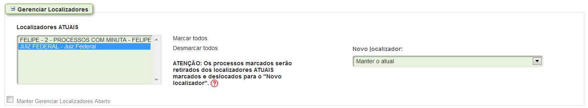

Como é hoje  Proposta Selecione o localizador AAUD AAUD-ACORDO AG - JA AG. DIGITALIZAÇÃO AJG ALEXANDRE ALEXANDRE - 2 ALEXANDRE-ANÁLISE ALEXANDRE-CALC ANDRESA ANDRESA - 2 AUD-01 AUD-02 AUD-03 AUD-04 AUD-05 AUD-06 AUD-07 AUD-08 AUD-09 AUD-10 AUD-11 AUD-12 BAIXADOS BI01 - INICIAIS BI02 - EMENDA BI03 - AGEND-PERICIA BI03A - PSIQUIATRIA BI04 - PERICIA-JEF BI05 - PERICIA-FORA BI06 - LAUDO-VENC BI07 - CEMAN BI08 - CIT BI08 - CIT- ANALISAR BI09 - INT BI10 - RESOLVER BLOCODESP BLOCOSENT BRUNO CÁLCULO DEVOLVIDO CÁLCULOS CARTAS Pr Or Rog CEJUSCON-RECB CEMAN CÉSAR CÉSAR-2 CÉSAR-ANÁLISE CÉSAR-CALC CITAÇÃO CITAÇÃO - CV CLEUMA CLEUMA-2 CLEUMA-CALC CONCILIACAO_ENCERRAD CONCILIACAO_INICIADA CORREIO DECURSO DE PRAZO DEVOLUCAO TURMA DEVOLVIDOS DIGITALIZADOS DILAÇÃO DE PRAZO PF DILIGÊNCIAS DR. VITOR DS EMBARGOS - TRÂNSITO ES ES-CALC JEF ES-CALC-RRA ES-EADJ-B ES-EADJ-C ES-EADJ-C2 ES01 - INT CÁLC ES02 - RPV DIG ES02A - RPV ACORDO ES02B - RPV INT ES03 - RPV ASS ES04 - AGP ES04B - AGP PREC ES05 - INT DT ES06 - RPV ERRO EXP FELIPE FELIPE - 2 FERNANDO 2º JEF FLAVIO FLAVIO - 2 FLÁVIO - CV FLÁVIO-ANÁLISE FLAVIO-CALC GAB GABDESP GABS GUILHERME INT-SENT INTIMAÇÃO-CV JORDANA JORDANA - 2 JUIZ FEDERAL JUIZ FEDERAL SUBST LAUDOCAPAZ LAUDOINCAPAZ LISTADOS LIUDMILA LIUDMILA-CALC MAGNO MAGNO - 2 MAGNO-ANÁLISE MAND CUMPRIDO MAND PARC CUMPRIDO MAND SEM CUMPRIMENTO MARCA-AUD MIGRADOS EPROCV1 MUT MUT-DEV PEDIDO DECL. COMP. PETIÇÃO PETIÇÃO INICIAL PETIÇÃO INICIAL JEF PI - DEPENDÊNCIA PROC ADV REU PZ-CP PZ-OF REATIVADOS REBECA RECEBIDOS RECEBIDOS-DIL./CONC. RENATA RENATA - 2 REQ - INTIMADA REQ - PAGA REQ - PREP. TRANSM. REQ - PROCESSADA RESTRITO AO JUIZ SERGIO SERGIO - 2 SÉRGIO-ANÁLISE SERGIO-CALC Simone SIMONE-ANÁLISE SIMONE-CALC SOLANGE SOLANGE - 2 STF-REM SUSPENSOS SUSPENSOS-RETORNO TEREZINHA TR TRF-AGRAVO RETIDO TRF-BAIXADOS TRF-DECISÃO TRF-JULGADOS TRF-RECEBIDOS TRF-REMETIDOS URGENTE URGENTE JEF VERIFICAR VERIFICAR PROCURADOR VIDISON VISTA ADV PROCESSO Salvar Objetiva facilitar a inserção e exclusão de localizadores nos processos.